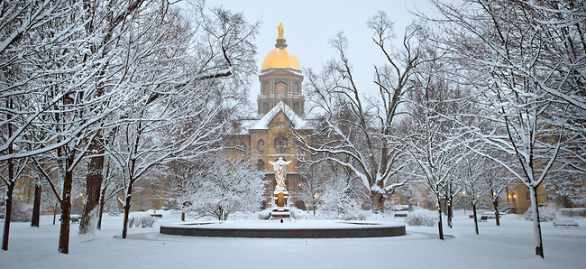

Winter 2017 Midwest Topology Seminar

When: Saturday, February 11, 2017
Where: University of Notre Dame, South Bend, IN, Hayes-Healy Center 127
(Coffee and reception will take place in adjoining Hurley Hall)
Contact: Mark Behrens
Schedule:
9:00-10:00: Coffee
10:00-11:00: Daniel Berwick-Evans (UIUC) - Field theories and elliptic cohomology from the vantage of characters
11:30-12:30: Vitaly Lorman (Johns Hopkins) - Real Johnson-Wilson theories: computations toward applications
2:30-3:30: Carmen Rovi (Indiana) - The mod 8 signature of a fiber bundle
4:00-5:00: Sam Nariman (Northwestern) -
Milnor-Friedlander's problem for diffeomorphism groups
Substituting for Bena Tshishiku (Harvard) - Obstructions to Nielsen realization
(Tshishiku was unable to attend due to plane delays)
5:00-6:00: Reception
Abstracts of the talks.
Local Information: A map of Notre Dame. A list of local restaurants (for lunch and dinner)
Parking: Because it is the weekend, you can park for free in any lot labelled "B" or "C".
Registration: here. Register by Jan 27 to be considered for funding, by Feb 5 if you plan to attend the reception. Registered participants
Hotel: A block of rooms have been reserved at the Residence Inn - South Bend. The hotel is conveniently located near downtown south bend, 1.7 miles from the university. They have a shuttle for folks if needed. We have two kinds of rooms reserved (sharing is encouraged to maximize reimbursement to participants):
- Studio Suites - $118/night + 13% sales tax (has 1 queen bed and a pull-out couch and 1 bathroom - sleeps up to 4)
- Penthouse Suites - $165/night + 13% sales tax (has 2 king beds and 1 sofa bed and 2 bathrooms: sleeps up to 6)
For the conference rate, please reserve here by 2/1/2017.
Funding: Some limited funding is available to support travel and local expenses of participants, especially for graduate students, postdocs, and faculty without other support. Please make funding requests using the registration link above. (Note: funding decisions will be made on Jan 27)